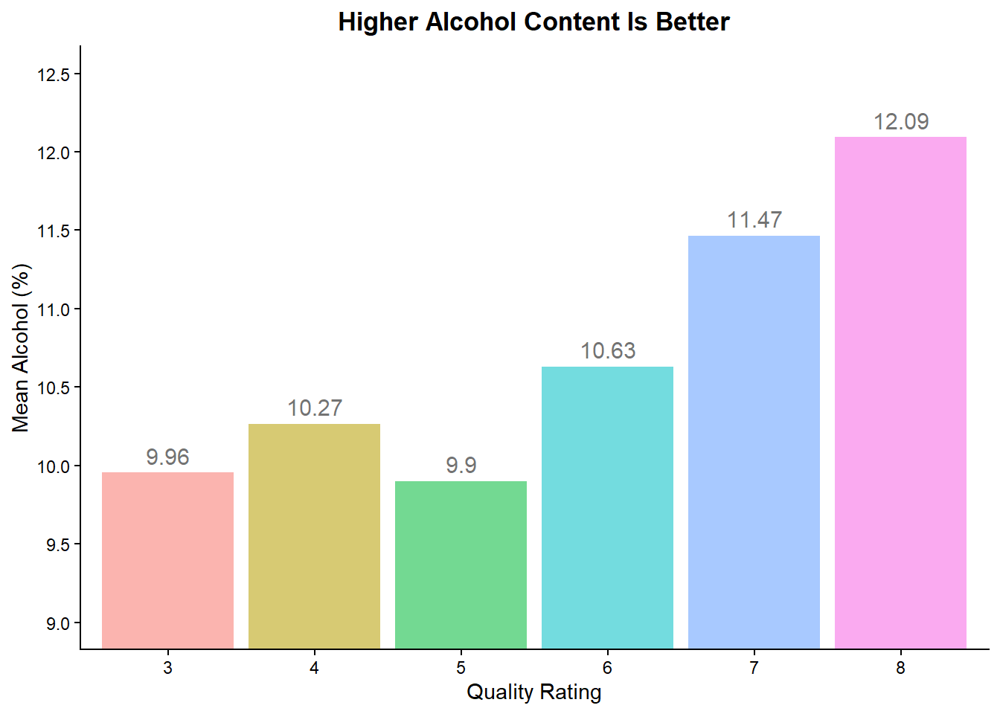
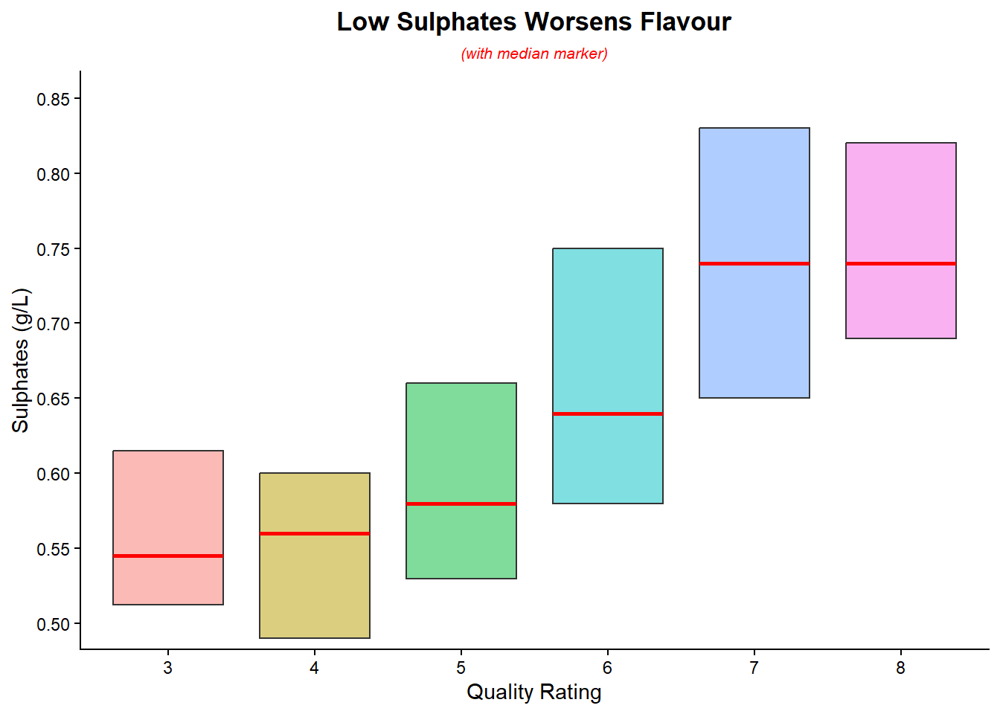
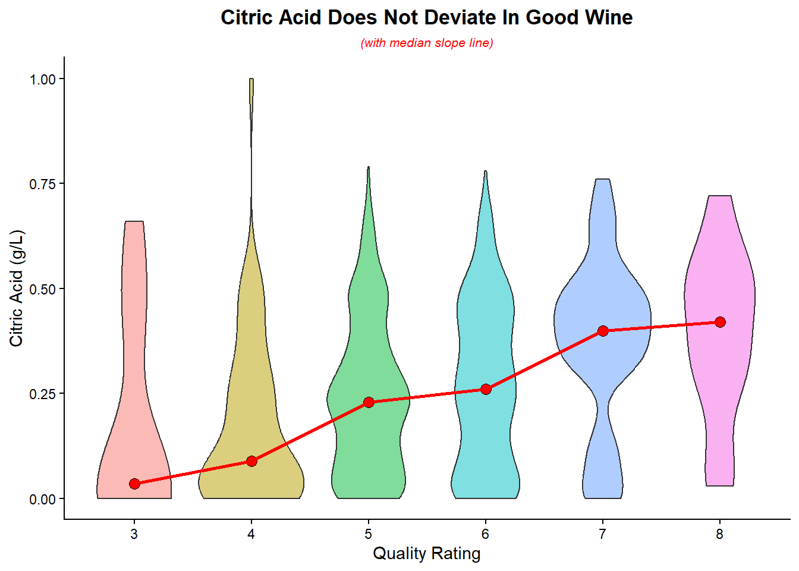

library(ggplot2)
library(scales)
library(dplyr)
library(tibble)
library(knitr)
wine_quality <- read.csv("data/wine_quality.csv")
Noble Wines by Latulippe, a bourgie wine start‑up, needs to identify which production variables influence wine quality in order to optimize its fermentation process without inflating costs. By analyzing chemical properties data from red wine samples, we can pinpoint the key production markers that drive quality and shape the production of our flagship wine.
Our wine quality dataset originates from the Instituto Superior de Engenharia do Porto (ISEP) in Portugal. It contains measurements and quality ratings of Portuguese red wines collected between 2004 and 2007. The dataset was originally created for scientific research in oenology. Each observation represents a lab‑analyzed wine sample, with 11 measurable variables and one subjective taste‑tester rating. The study is complete and no longer updated, reflecting data from a specific time period and region. Known limitations include the subjectivity of quality scores from taste‑testers and the geographic restriction to a single region.
Our dataset for this project was accessed on the Kaggle webpage: Wine Quality Dataset. We downloaded the wine_quality.csv file and loaded it into the RStudio environment using:
wine_quality <- read.csv("data/wine_quality.csv")This allows our .Rmd document to run independently without relying on external data sources or an internet connection.
The wine quality dataset contains 1,599 observations and 12 variables, with no missing values. Its numeric variables are well‑suited for quantitative analysis, and categorical groupings can be derived directly from quality scores (e.g., acidity levels grouped from low-3 to high-8). No imputation or data cleaning was required. The source is credible, originating from ISEP and published through the University of California Irvine’s Machine Learning Repository, a resource widely cited in both academic and industry research.
This dataset directly supports business decisions aimed at product quality improvement. Noble Wines by Latulippe can analyze how physicochemical properties — such as acidity, additives and alcohol content — influence consumer ratings to refine production processes. By linking measurable chemical attributes to perceived quality, recommendations can be made that guide strategic decisions in the wine market.
# examine data
dim(wine_quality)## [1] 1599 12str(wine_quality) ## 'data.frame': 1599 obs. of 12 variables:
## $ fixed.acidity : num 7.4 7.8 7.8 11.2 7.4 7.4 7.9 7.3 7.8 7.5 ...
## $ volatile.acidity : num 0.7 0.88 0.76 0.28 0.7 0.66 0.6 0.65 0.58 0.5 ...
## $ citric.acid : num 0 0 0.04 0.56 0 0 0.06 0 0.02 0.36 ...
## $ residual.sugar : num 1.9 2.6 2.3 1.9 1.9 1.8 1.6 1.2 2 6.1 ...
## $ chlorides : num 0.076 0.098 0.092 0.075 0.076 0.075 0.069 0.065 0.073 0.071 ...
## $ free.sulfur.dioxide : num 11 25 15 17 11 13 15 15 9 17 ...
## $ total.sulfur.dioxide: num 34 67 54 60 34 40 59 21 18 102 ...
## $ density : num 0.998 0.997 0.997 0.998 0.998 ...
## $ pH : num 3.51 3.2 3.26 3.16 3.51 3.51 3.3 3.39 3.36 3.35 ...
## $ sulphates : num 0.56 0.68 0.65 0.58 0.56 0.56 0.46 0.47 0.57 0.8 ...
## $ alcohol : num 9.4 9.8 9.8 9.8 9.4 9.4 9.4 10 9.5 10.5 ...
## $ quality : int 5 5 5 6 5 5 5 7 7 5 ...# data completeness check
colSums(is.na(wine_quality))## fixed.acidity volatile.acidity citric.acid
## 0 0 0
## residual.sugar chlorides free.sulfur.dioxide
## 0 0 0
## total.sulfur.dioxide density pH
## 0 0 0
## sulphates alcohol quality
## 0 0 0(colSums(is.na(wine_quality)) / nrow(wine_quality)) * 100## fixed.acidity volatile.acidity citric.acid
## 0 0 0
## residual.sugar chlorides free.sulfur.dioxide
## 0 0 0
## total.sulfur.dioxide density pH
## 0 0 0
## sulphates alcohol quality
## 0 0 0# data frequency for each column
sapply(wine_quality, n_distinct)## fixed.acidity volatile.acidity citric.acid
## 96 143 80
## residual.sugar chlorides free.sulfur.dioxide
## 91 153 60
## total.sulfur.dioxide density pH
## 144 436 89
## sulphates alcohol quality
## 96 65 6To begin optimizing the fermentation process, we need to aggregate all variable levels by quality rating to eliminate results that show no clear correlation with quality.
# aggregate all variables by quality
aggregate(. ~ quality, data = wine_quality, FUN = mean)## quality fixed.acidity volatile.acidity citric.acid residual.sugar chlorides
## 1 3 8.360000 0.8845000 0.1710000 2.635000 0.12250000
## 2 4 7.779245 0.6939623 0.1741509 2.694340 0.09067925
## 3 5 8.167254 0.5770411 0.2436858 2.528855 0.09273568
## 4 6 8.347179 0.4974843 0.2738245 2.477194 0.08495611
## 5 7 8.872362 0.4039196 0.3751759 2.720603 0.07658794
## 6 8 8.566667 0.4233333 0.3911111 2.577778 0.06844444
## free.sulfur.dioxide total.sulfur.dioxide density pH sulphates
## 1 11.00000 24.90000 0.9974640 3.398000 0.5700000
## 2 12.26415 36.24528 0.9965425 3.381509 0.5964151
## 3 16.98385 56.51395 0.9971036 3.304949 0.6209692
## 4 15.71160 40.86991 0.9966151 3.318072 0.6753292
## 5 14.04523 35.02010 0.9961043 3.290754 0.7412563
## 6 13.27778 33.44444 0.9952122 3.267222 0.7677778
## alcohol
## 1 9.955000
## 2 10.265094
## 3 9.899706
## 4 10.629519
## 5 11.465913
## 6 12.094444A quick check of the standard deviation‑to‑mean relationship reveals that only citric acid shows a consistency issue as wine quality decreases.
# create a data frame of standard deviation / mean
deviation <- c(
volatile_acidity = mean(aggregate(volatile.acidity ~ quality, data = wine_quality, FUN = function(x) sd(x)/mean(x))[[2]]),
citric_acid = mean(aggregate(citric.acid ~ quality, data = wine_quality, FUN = function(x) sd(x)/mean(x))[[2]]),
chlorides = mean(aggregate(chlorides ~ quality, data = wine_quality, FUN = function(x) sd(x)/mean(x))[[2]]),
density = mean(aggregate(density ~ quality, data = wine_quality, FUN = function(x) sd(x)/mean(x))[[2]]),
pH = mean(aggregate(pH ~ quality, data = wine_quality, FUN = function(x) sd(x)/mean(x))[[2]]),
sulphates = mean(aggregate(sulphates ~ quality, data = wine_quality, FUN = function(x) sd(x)/mean(x))[[2]]),
alcohol = mean(aggregate(alcohol ~ quality, data = wine_quality, FUN = function(x) sd(x)/mean(x))[[2]]))
# generate a table for presentation
tibble(
Variable = tools::toTitleCase(gsub("_", " ", names(deviation))),
Coefficient = paste0(round(deviation * 100, 1), "%")) %>%
kable(align = c("l", "r"), col.names = c("**Variable**", "**Deviation**"))| Variable | Deviation |
|---|---|
| Volatile Acidity | 33.4% |
| Citric Acid | 85% |
| Chlorides | 49.7% |
| Density | 0.2% |
| pH | 4.9% |
| Sulphates | 24.3% |
| Alcohol | 8.9% |
We need to determine the top correlators by calculating a modified correlation coefficient for the variables and eliminating any results with less than 75% correlation.
# tally high quality values.
volatileacidity <- wine_quality[wine_quality$volatile.acidity < 0.497, ]
citricacid <- wine_quality[wine_quality$citric.acid > 0.273, ]
chlorides <- wine_quality[wine_quality$chlorides < 0.0849, ]
density <- wine_quality[wine_quality$density > 0.996, ]
pH <- wine_quality[wine_quality$pH < 3.31, ]
sulphates <- wine_quality[wine_quality$sulphates > 0.675, ]
alcohol <- wine_quality[wine_quality$alcohol > 10.6, ]
# total high quality wines
high_quality_total <- sum(wine_quality$quality >= 7)
# create data frame
contributions <- c(
volatile_acidity = sum(volatileacidity$quality >= 7) / high_quality_total,
citric_acid = sum(citricacid$quality >= 7) / high_quality_total,
chlorides = sum(chlorides$quality >= 7) / high_quality_total,
density = sum(density$quality >= 7) / high_quality_total,
pH = sum(pH$quality >= 7) / high_quality_total,
sulphates = sum(sulphates$quality >= 7) / high_quality_total,
alcohol = sum(alcohol$quality >= 7) / high_quality_total)
# generate table for presentation
tibble(Variable = tools::toTitleCase(gsub("_", " ", names(contributions))),
Coefficient = paste0(round(contributions * 100, 1), "%")) %>%
kable(align = c("l", "r"), col.names = c("**Variable**", "**Coefficient**"))| Variable | Coefficient |
|---|---|
| Volatile Acidity | 75.6% |
| Citric Acid | 78.3% |
| Chlorides | 73.3% |
| Density | 47.5% |
| pH | 56.7% |
| Sulphates | 70.5% |
| Alcohol | 78.8% |
We can then establish a three‑factor testing floor. 69.1% of high‑quality wines (rated 7–8) exceed the parameters of 9.9% alcohol, 0.570 g/L sulphate, and 0.171 g/L citric acid. This provides a solid recommendation to set a bottom line requiring all wines to test above these metrics.
# find data with these parameters
floor_profile <- wine_quality[
wine_quality$citric.acid > 0.171 &
wine_quality$alcohol > 9.9 &
wine_quality$sulphates > 0.570, ]
# calculate
low_profile <- sum(floor_profile$quality >= 7)
percentage <- round(low_profile / sum(wine_quality$quality >= 7) * 100, 1)
#generate table
kable(paste0(percentage, "%"), col.names = c("Floor Percentile"))| Floor Percentile |
|---|
| 69.1% |
Lastly, we can determine a three‑factor testing benchmark. 5.1% of high‑quality wines (rated 7–8) fall below the parameters of 12.0% alcohol, 0.767 g/L sulphate, and 0.391 g/L citric acid. This provides a solid recommendation for benchmarks to meet and should be set as Noble Wines by Latulippe’s goal.
# find data with these parameters
ceiling_profile <- wine_quality[
wine_quality$citric.acid > 0.391 &
wine_quality$alcohol > 12.0 &
wine_quality$sulphates > 0.767, ]
# calculate
high_profile <- sum(ceiling_profile$quality >= 7)
percentage <- round(high_profile / sum(wine_quality$quality >= 7) * 100, 1)
# generate table
kable(paste0(percentage, "%"), col.names = c("Benchmark Percentile"))| Benchmark Percentile |
|---|
| 5.1% |
# generate alcohol bar chart
ggplot(wine_quality, aes(x = factor(quality), y = alcohol, fill = factor(quality), alpha = 0.5)) +
stat_summary(fun = mean, geom = "bar") +
stat_summary(fun = mean, geom = "text",
aes(label = round(after_stat(y), 2)),
vjust = -0.5, size = 4) +
labs(title = "Higher Alcohol Content Is Better",
x = "Quality Rating", y = "Mean Alcohol (%)") +
scale_y_continuous(
breaks = seq(9, 12.5, by = 0.5)
) +
coord_cartesian(ylim = c(9, 12.5)) +
theme_classic() +
theme(plot.title = element_text(hjust = 0.5, face = "bold"),
legend.position = "none")
The bar chart displays the mean alcohol content for each quality rating. A positive relationship is evident: higher alcohol levels are associated with higher wine quality. The rate of increase in quality becomes more pronounced as alcohol content rises.
# generate sulphate boxplot
ggplot(wine_quality, aes(x = factor(quality), y = sulphates, fill = factor(quality))) +
geom_boxplot(alpha = 0.5, coef = 0, outlier.shape = NA, median.colour = "red") +
labs(title = "Low Sulphates Worsens Flavour",
subtitle = "(with median marker)",
x = "Quality Rating", y = "Sulphates (g/L)") +
scale_y_continuous(
breaks = seq(0.5, 2, by = 0.05)) +
coord_cartesian(ylim = c(0.5, .85)) +
theme_classic() +
theme(plot.title = element_text(hjust = 0.5, face = "bold"),
plot.subtitle = element_text(hjust = 0.5, color = "red", face = "italic", size = 8),
legend.position = "none")
The boxplot displays the upper and lower quartiles and the median sulphate levels for each wine quality rating. A positive relationship between sulphates and wine quality is evident. Lower‑end sulphate levels show a tighter distribution compared to higher‑end levels.
# generate citric acid violin plot
ggplot(wine_quality, aes(x = factor(quality), y = citric.acid, fill = factor(quality))) +
geom_violin(trim = TRUE, alpha = 0.5) +
stat_summary(fun = median, geom = "point", shape = 21, size = 3, fill = "red") +
stat_summary(fun = median, geom = "line", aes(group = 1), color = "red", linewidth = 1) +
labs(title = "Citric Acid Does Not Deviate In Good Wine",
subtitle = "(with median slope line)",
x = "Quality Rating", y = "Citric Acid (g/L)") +
theme_classic() +
theme(plot.title = element_text(hjust = 0.5, face = "bold"),
plot.subtitle = element_text(hjust = 0.5, color = "red", face = "italic", size = 8),
legend.position = "none")
The violin plot illustrates the distribution of citric acid across wine quality ratings. A positive relationship between citric acid levels and quality ratings is evident. The data diverges further from the median at lower citric acid levels, indicating greater variability.
Higher alcohol percentage is strongly associated with increased wine quality. The slope of the relationship rises from 0.31 to 0.63, showing that quality improves more sharply as alcohol content increases. This makes alcohol the decisive and principal variable in production analysis.
# calculate first and last slope
(10.27-9.96)/(4-3)## [1] 0.31(12.09-11.47)/(8-7)## [1] 0.62Sulphate levels rise with wine quality but plateau around 0.74 g/L, as quality‑8 wines show no further increase. This ceiling effect suggests limited benefit at higher concentrations and highlights that, while sulphates generally exhibit a positive relationship with wine quality, the highest concentrations reveal a negative association, as seen when looking at maximum values. Excessive sulphate becomes detrimental, limiting the overall upward trend. This pattern suggests, costs associated with sulphates can be reduced by lowering the target benchmark without risk of compromising product quality.
# find max data in each quality score for sulphate
aggregate(sulphates ~ quality, data = wine_quality, FUN = max)## quality sulphates
## 1 3 0.86
## 2 4 2.00
## 3 5 1.98
## 4 6 1.95
## 5 7 1.36
## 6 8 1.10The violin plot, supported by a standard deviation check, shows that citric acid deviates further from the mean as wine quality decreases. However, citric acid should remain a secondary concern compared to alcohol content, since its levels exhibit overlapping ranges despite the overall positive relationship with quality.
# trend of deviation for citric acid
aggregate(citric.acid ~ quality, data = wine_quality, FUN = function(x) sd(x) / mean(x))## quality citric.acid
## 1 3 1.4658688
## 2 4 1.1543455
## 3 5 0.7386671
## 4 6 0.7125311
## 5 7 0.5182428
## 6 8 0.5101506Recommendations for Noble Wines by Latulippe
Target alcohol levels of 12% or higher
Premium wines consistently show elevated alcohol content, achieved through higher‑quality grapes and extended fermentation. Sugar concentration itself does not drive quality, but grape quality ensures optimal conditions to yield alcohol.Maintain citric acid consistency
High‑quality wines cluster tightly around 0.35–0.45 g/L citric acid. Deviations outside this range reduce taste and predictability. Strict monitoring of acid levels during fermentation is essential to preserve consistency and consumer confidence.Lower costs with sulphate regulation
While sulphates correlate positively with wine quality, the benefit plateaus around 0.74 g/L. Reducing sulphates to levels typical of less‑than‑perfect wines avoids excess input costs without compromising product quality.